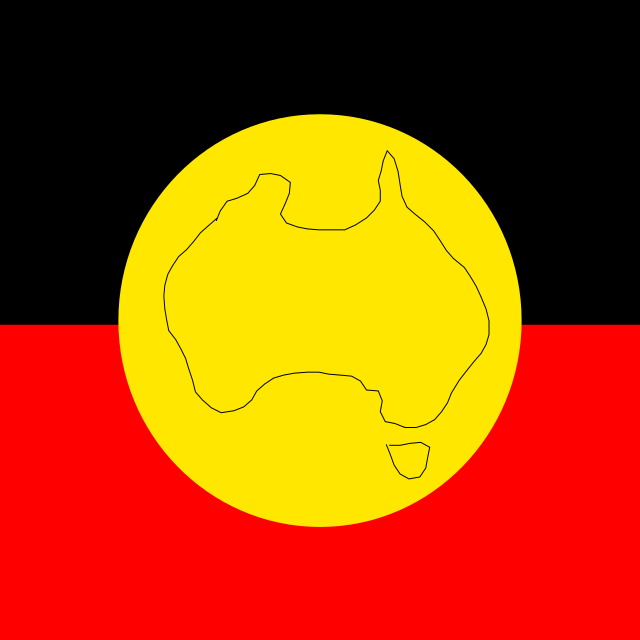

Koori Culture
Koori Artwork
Introduction to the Koori Artwork
Today Billy and Changken presents you with our own artwork, mostly in the style of Indigenous Australian art and culture. Using the power of SVG,
this ensures that our artwork is able to be seen online without any loss of clarity or quality.

Description of Artwork
This image depicts the official Aboriginal Australian flag with the outline of Australia's land inside the yellow circle to represent national unity, equality, freedom and peace.
In the original flag, the black stands for the sky, the red stands for the land and the yellow stands for the sun.